- ما هي الشمندورة؟؟؟؟؟؟؟؟؟؟
الشمندورة هي عبارة عن جسم معدنى طافى يصنع عادة من الحديد ( حاليا يوجد بعض الأنواع المصنعة من الألياف الزجاجية والتى لها قوة تحمل تماثل الحديد ) ذو أشكال مختلفة، لها إتزان فى الماء، تثبت إلى قاع البحر بواسطة جنزير به مخطاف Anchor أو وسيلة تثبيت أخرى ثقل (Sink) حتى لا تتحرك من موقعها التي وضعت به.
- ما هي استخدامات الشمندورة ؟
1-تستخدم الشمندورات كعلامات ملاحية أو إرشادية، كذلك تستخدم لتحديد مداخل الموانئ والأنهار.
وقد رأى الإتحاد الدولي لسلطات المنائر بأن وجود نظام دولي موحد للشمندورات ليس بالفكرة الجديدة، وفي عام 1973 قامت اللجنة الفنية للإتحاد الدولي لسلطات المنائر بالتقديم لهذا النظام.
2- وقد أشارت اللجنة إلى أن وجود مثل هذا النظام لا يمكن تحقيقه فوريا وبالتالي تم وضع حل بديل و هو وجود نظامين ( أ ، ب ) و قد تم وضع القواعد التى تحكم النظامين بحيث تكون متماثلة لأقصى حد، وقد تم جمعهما تحت مسمى النظام الدولي للشمندورات الملاحية.
3- يشتمل النظام ( أ ) على علامات الجهات الأصلية والعلامات الخاصة وعلامة الخطر المنعزل وعلامة المياه الآمنة وعلامات الطرقات الملاحية.
4- ويقتصر النظام ( ب ) على علامات الطرقات الملاحية فقط .
5- ويطبق النظام على جميع العلامات العائمة والثابتة عدا المنائر والأنوار ذات القطاعات (الأقواس الضوئية) وأنوار التطابق وسفن المنائر.
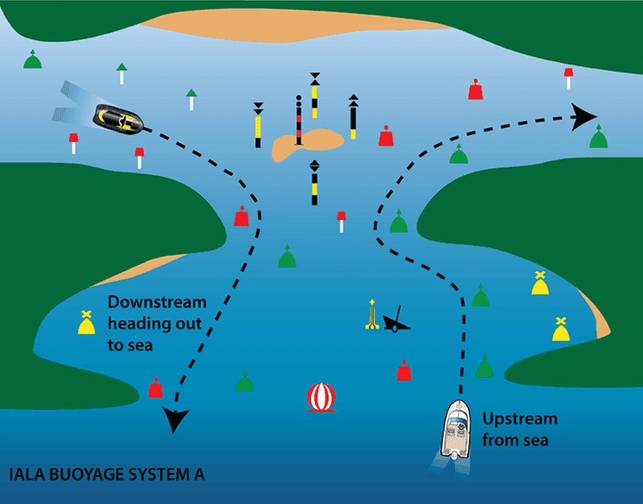
- ما هي أشكال الشمندورات ؟
يوجد العديد من أشكال الشمندورات و لكن الشائع منها خمسة أشكال و هي :
1- الرمحي:
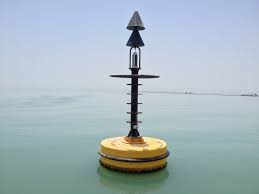
2- العصوي:
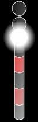
3- الكروي:
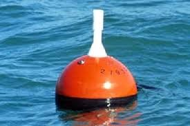
4- المخروط:
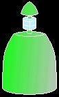
5- شبه الأسطواني:
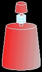
- ما هي أنواع الشمندورات ؟
1- شمندورات الجهات الأصلية :
هي شمندورات تستخدم لتحديد الجهات الأصلية الأربع ( شمال ، جنوب ، شرق ، غرب ) لمنطقة خطر(مساحة خطر).
و كل شمندورة تحدد جهة من الجهات الأصلية لهذه المنطقة وتعني أن مرور السفينة من الجهة التي تسمى بها هذه الشمندورة ( إلى الشمال من شمندورة الشمال، إلى الشرق من شمندورة الشرق وهكذا. )
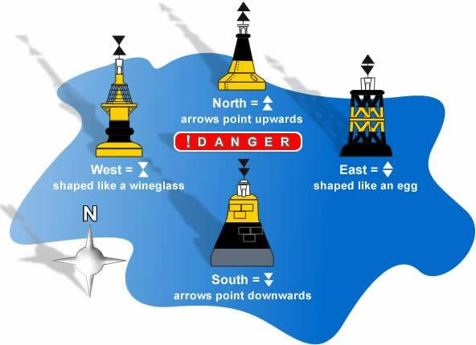
شمندورة الشمال:
◄الشكل: رمحي، عصوي
◄اللون: النصف العلوي أسود والنصف السفلي أصفر
◄علامة القمة: مخروطين قمتيهما لأعلى لونهما أسود
◄لون الإضاءة: أبيض
◄وتيرة الإضاءة: 60 أو 120 ومضة / دقيقة ( سريعة أو سريعة جدا
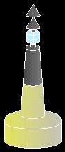
شمندورة الجنوب :
◄الشكل: رمحي، عصوي
◄اللون: النصف العلوي أصفر والنصف السفلي أسود
◄علامة القمة: مخروطين قمتيهما لأسفل لونهما أسود
◄لون الإضاءة: أبيض
◄وتيرة الإضاءة: 6 + 1 (6 ومضات متبوعة بومضة طويلة سريعة أو سريعة جدا) كل 10 ثواني أو كل 15 ثانية .
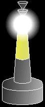
شمندورة الشرق :
◄الشكل: رمحي، عصوي
◄اللون: مقسمة إلى ثلاثة أجزاء، العلوي والسفلى أسود والأوسط أصفر
◄لون الإضاءة: أبيض
◄وتيرة الإضاءة: 3 ومضات (سريعة أو سريعة جدا) كل 5 ثواني او كل 10 ثواني.
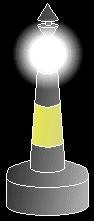
شمندورة الغرب :
◄الشكل: رمحي، عصوي
◄اللون: مقسمة إلى ثلاثة أجزاء، العلوي والسفلى أصفر ◄والأوسط أسود
◄علامة القمة: مخروطين قمتاهما متقابلين لونهما أسود
◄لون الإضاءة: أبيض
◄وتيرة الإضاءة: 9 ومضات ( سريعة أو سريعة جدا) كل 10 ثواني او كل 15 ثانية
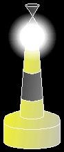
2- شمندورة المياه الآمنة :
هي شمندوره تستخدم للإخطار بأن المياه حول هذه الشمندورة آمنة من جميع الجهات، كذلك تستخدم لتحديد حدود الميناء عند القدوم من البحر وتستخدم كدلالة على مكان إلتقاط المرشد.
☻الشكل: رمحي، عصوي، كروي
☻اللون: أبيض وبه شرائح طولية باللون الأحمر
☻علامة القمة: كرة لونها أحمر
☻لون الإضاءة: أبيض
☻وتيرة الإضاءة: ومضة طويلة أو نور متساوي الطور أو نور احتجاب(وقت الأضاءة طويل)
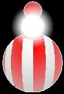
3- شمندورة الخطر المنعزل :
هي شمندورة تستخدم للدلالة على وجود خطر تحت الماء تحت هذه الشمندورة مباشرة مثل سفينة غرقت أو أى عائق ملاحي تحت سطح الماء وعادة يترك الملاح مسافة من هذه الشمندورة كدائرة أمان وقد جرى التعرف على رسم دائرة نصف قطرها 250 متر من الشمندورة وتجنب المرور على مسافة أقل من ذلك.
☻الشكل: رمحي، عصوي
☻اللون: أسود به حزام أو أكثر باللون الأحمر
☻علامة القمة: كرتين لونهما أسود
☻لون الإضاءة: أبيض
☻وتيرة الإضاءة: 2 ومضة
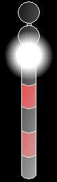
4- شمندورات المدخل :
♥هي عبارة عن زوج من الشمندورات توضع على جانبي مدخل الميناء أو النهر لتحديد اتجاه المجرى الملاحي وتكون شمندورات مخروطية الشكل على جانب أيمن المدخل عند دخول الميناء من البحر يكون لونها أخضر.
♥وتكون شمندورات شبه إسطوانية الشكل على الجانب الأيسر للمدخل عند الدخول من البحر في نفس النظام ويكون لونها أحمر.